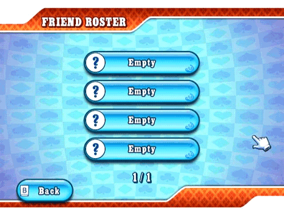

23 |
Friends (Vrienden) |
 |
Je krijgt je ‘Friend Code’ (Vriendencode) door naar het menu ‘Create Game’ (Spel creëren) te gaan. De code kun je delen via de telefoon, e-mail of het internet met al je vrienden. Friend Roster (Vriendenoverzicht)  Het Vriendenoverzicht dient voor twee dingen: om je vrienden en hun status in de gaten te houden en om deel te nemen aan een spel die zij hosten of spelen. Zodra je een vriendschap hebt gesloten in het spel, kun je je vrienden volgen en met hen meespelen in Wereldwijde games en spelletjes met vrienden zolang er stoelen beschikbaar zijn aan de tafel. Om bevriend te raken met iemand moet zowel jij als je vriend(in) elkaars ‘Friend Code’ (Vriendencode) registreren dat te vinden is in het menu ‘Add Friend’ (Vriend(in) toevoegen). Zolang dit niet gebeurt, is de online status en de alias van je toekomstige vriend(in) niet zichtbaar, alleen de ‘Friend Code’ (Vriendencode) is zichtbaar. Statustypen
Je vriend(in) speelt mee in een spel en jij kunt ook meespelen. Selecteer zijn/haar vakje in het Vriendenoverzicht.
Je vriend(in) is online maar hij/zij speelt niet. Je vriend(in) is online en hij/zij is aan het spelen, maar jij kunt niet meespelen. Als je geen smiley ziet, dan is je vriend(in) offline.
Selecteer dit om een vriend(in) uit je lijst te verwijderen. Add Friend (Vriend(in) toevoegen) Hier registreer je ‘Friend Codes’ (Vriendencodes). Je vrienden dienen dit ook te doen op hun Wii-systeem en dan ben je klaar om te spelen! |


 |
 |
 |